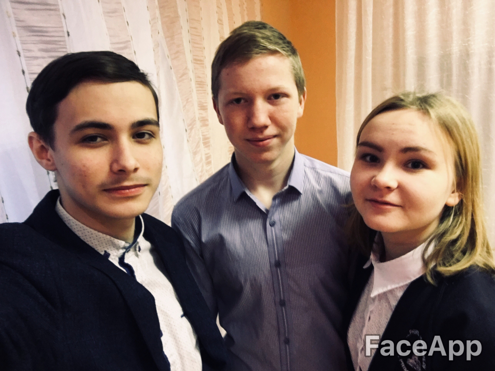

Многие люди, проживая всю жизнь в одном населённом пункте, даже не интересуются историей этого населённого пункта. Большинство не хочет узнать то, что происходит в их городе, селе, деревне сейчас, в данный момент, и от этого становится грустно и горько. Именно поэтому мы посчитали своим долгом познакомить наших односельчан с нашей историей и культурой. А поскольку большую часть неосведомленных людей составляет молодое поколение, мы решили создать сайт посвященный нашему селу, что для молодёжи будет несомненным плюсом.
Цель нашей команды посвятить людей в прошлое родного села, в его жизнь. Показать на обозрение посетителей различные достопримечательности, рассказать вам о людях, внёсших вклад в развитие данного населённого пункта.

Наша команда
Сидоров Даниил
Мальцев Александр
Пачколина Полина
Почта
d10esign10@gmail.com